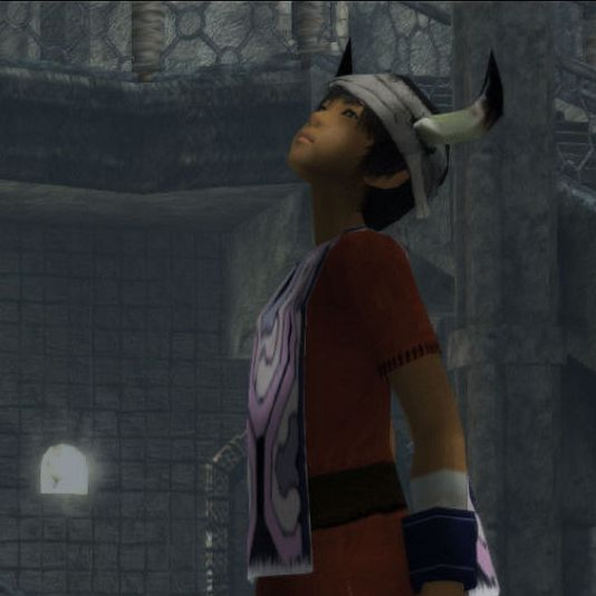
Ico
A horned boy cast out by his village. Brave and stubborn, he refuses to leave Yorda behind.

A tale set in an unknown era,
at an unknown place.
ICO is a PlayStation 2 adventure game by Team Ico, directed by Fumito Ueda and released in 2001. You play as Ico, a young boy born with horns. His village believes the horns are a bad omen, so he is taken to a vast, isolated castle and sealed inside a stone coffin as a sacrifice. When the coffin breaks open, Ico escapes and finds Yorda, a pale girl locked in a cage. She speaks a language Ico can't understand, but they decide to escape together. The castle's Queen wants Yorda for her own purposes, and dark shadow creatures try to drag Yorda away. Almost nothing is explained in words, so the story is told through what you see and feel as you go.
ICO is a puzzle-adventure game with platforming and light combat. You explore the castle's towers, bridges and courtyards to find a way out. You solve puzzles by pulling levers, pushing blocks and finding paths that Ico can climb but Yorda can't. You can hold Yorda's hand to pull her along, and you can call her to follow you. Only she can open the magic doors that block the way. When shadow creatures attack, Ico fights them with a stick or sword while protecting Yorda. If they catch her, you have to get her back. You save your progress by sitting on stone benches. There is no health bar or map on the screen, and that keeps the world quiet and focused.


A horned boy cast out by his village. Brave and stubborn, he refuses to leave Yorda behind.
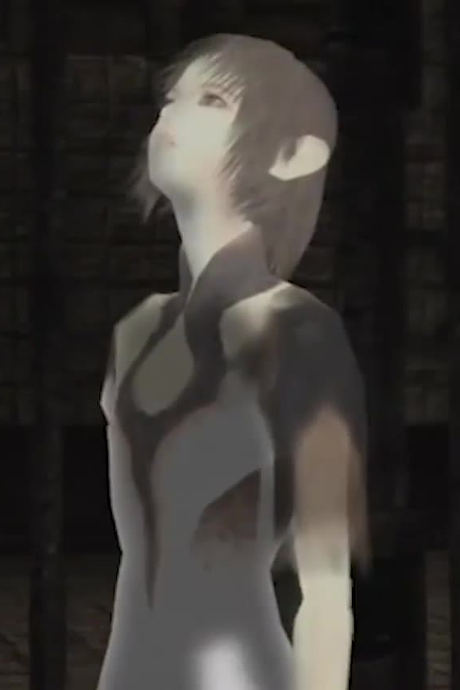
A quiet girl in white who speaks a language Ico can't understand. She needs his help to cross the castle.
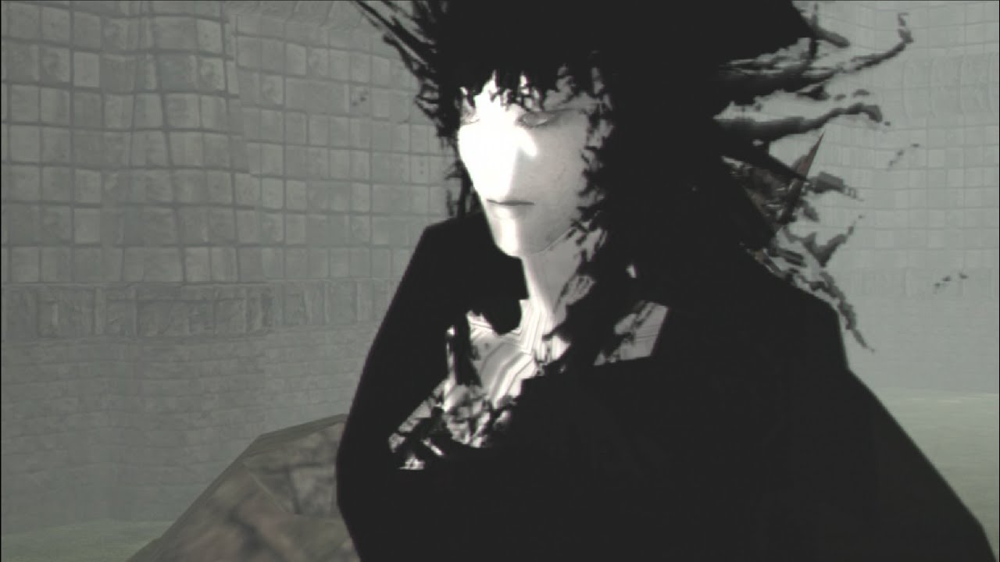
The ruler of the castle, who has her own plans for Yorda.
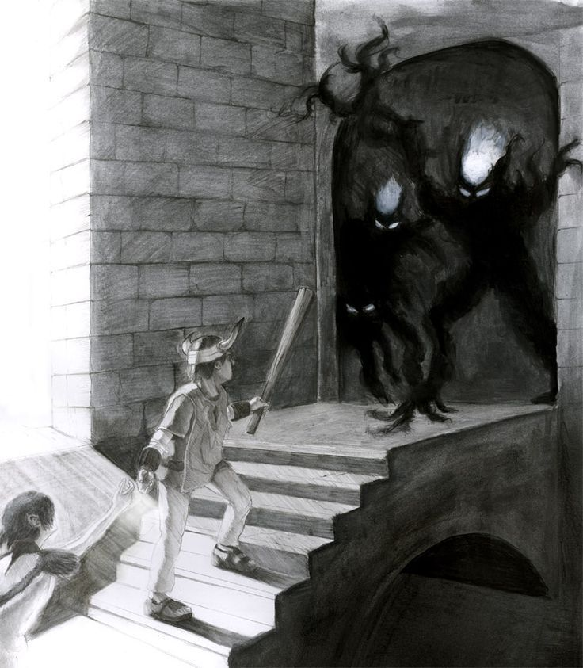
Dark shapes that rise from the ground and try to drag Yorda away.
Magazine issues, ads and fan art. Click an image to see it bigger.
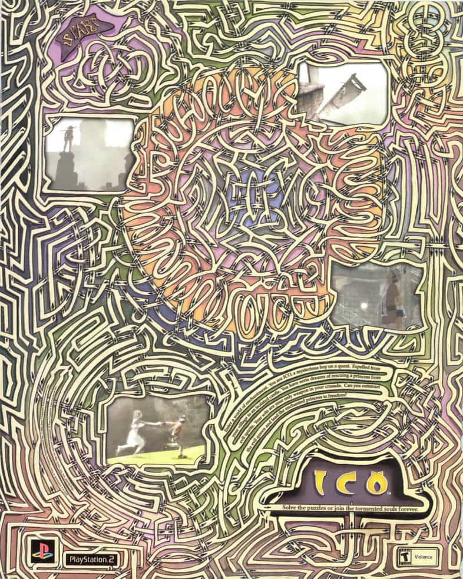
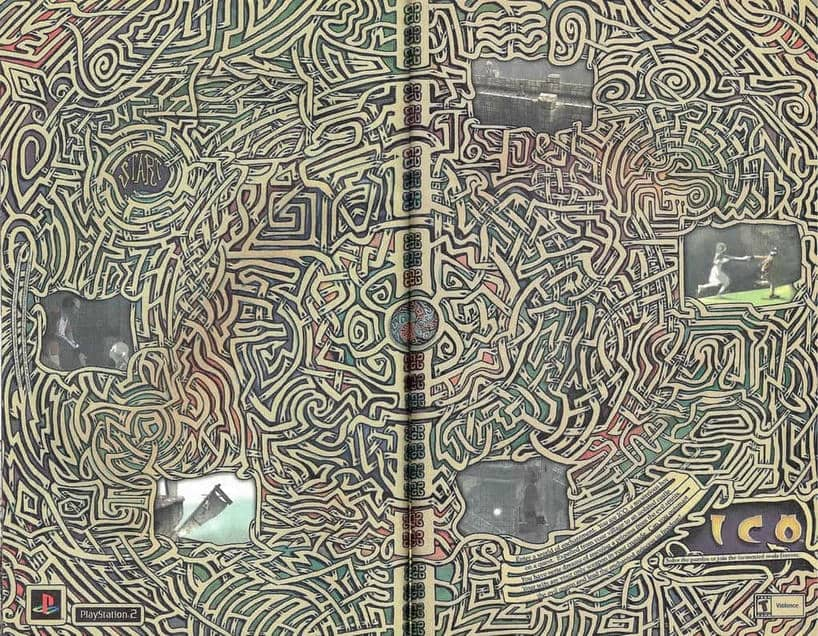

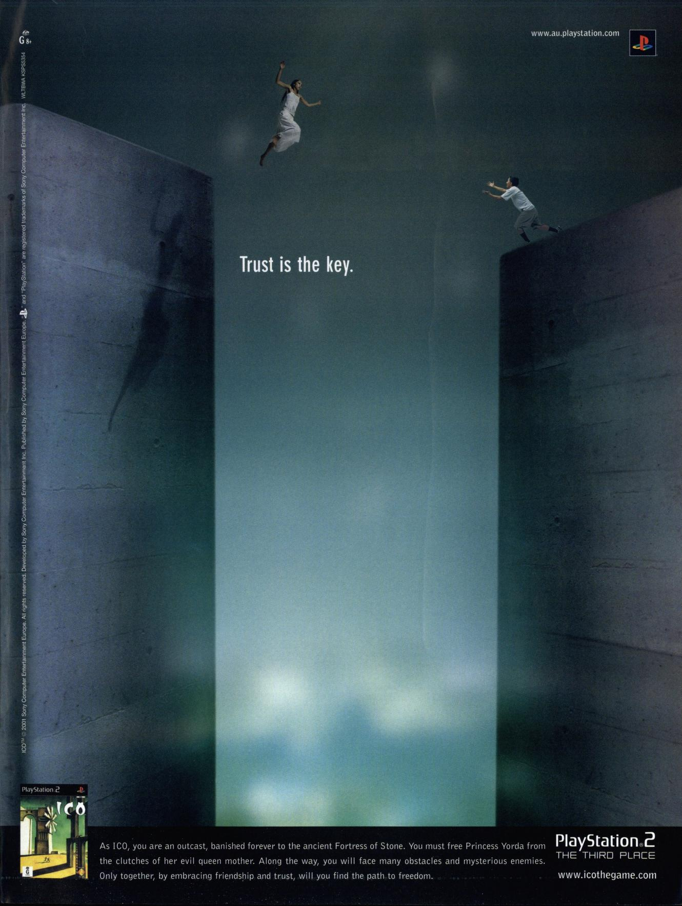
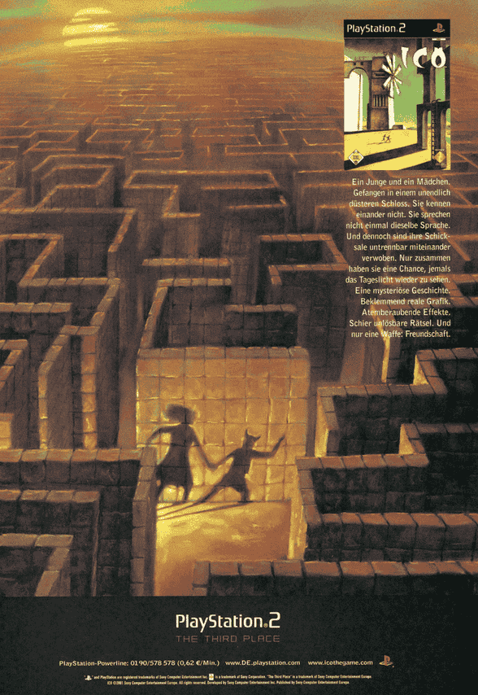
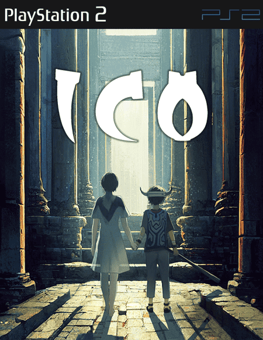
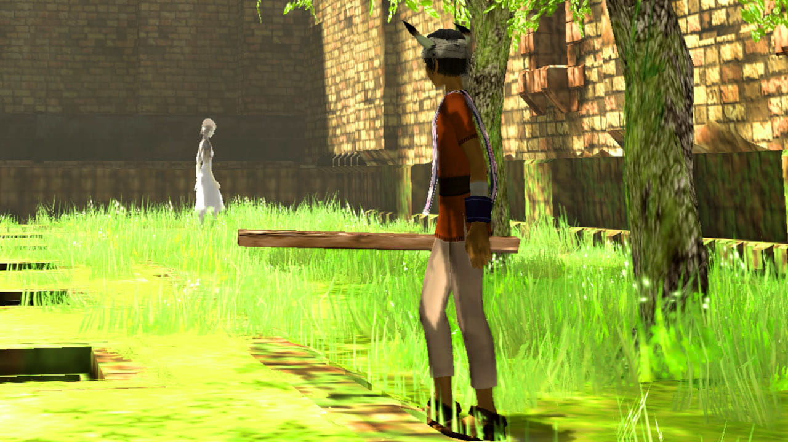
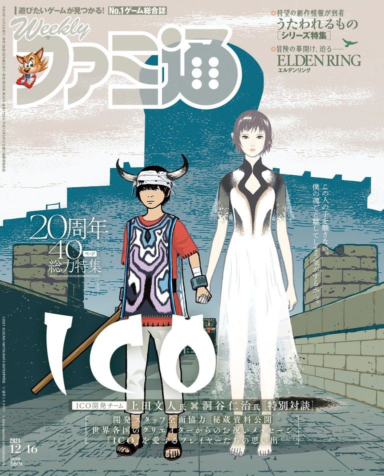
Flip through the original PS2 manuals page by page, just like holding the real booklet.
View more manuals →Pull a page across, or click it, to turn it.